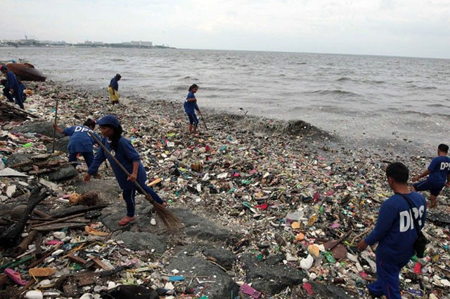
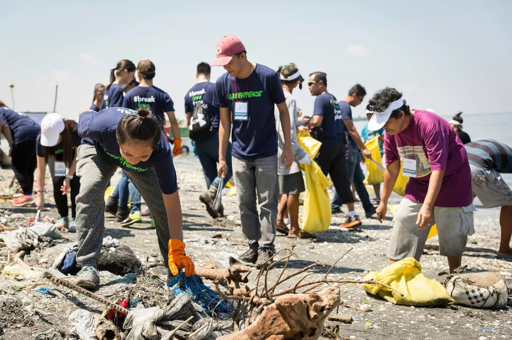
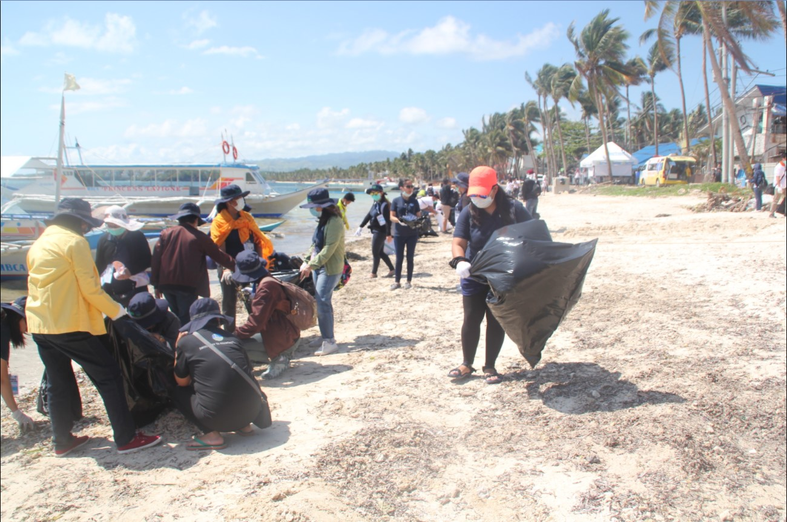

Actions
Government Actions Against Pollution
Republic Act No. 9003 (Ecological Solid Waste Management Act of 2000)
An act providing for an ecological solid waste management program, creating the necessary institutional mechanisms and incentives, declaring certain acts prohibited and providing penalties, appropriating funds therefor, and for other purposes
Republic Act No. 8749 (Philippine Clean Air Act of 1999)
An act providing for a comprehensive air pollution control policy and for other purposes.
Republic Act No. 9275 (Philippine Clean Water Act of 2004)
An Act providing for a comprehensive water quality management and for other purposes. This Act provides for the abatement and control of pollution from land-based sources, and lays down water quality standards and regulations. The Act shall apply to water quality management in all water bodies: fresh, brackish and marine waters.
Republic Act No. 9483 (Oil Pollution Compensation Act of 2007)
An act providing for the implementation of the provisions of the 1992 international convention on civil liability for oil pollution damage and the 1992 international convention on the establishment of an international fund for compensation for oil pollution damage, providing penalties for violations thereof, and for other purposes

Organizations' Actions Against Pollution
Greenpeace Philippines's main goal is to protect natural landscapes, species, and more from environmental threats such as perilous waste imports, coal projects, and illegal logging. Aside from promoting ecological farming, this volunteer-based group also holds campaigns against land, air, and water pollution.
Healthcare for Clean Air Alliance, aims to highlight the health impacts of air pollution by pushing for the strict implementation of laws against air pollutants and helping improve the country's air-quality monitoring standards.
Philippine College of Physicians' Advocacy Committee on Climate Change has recently started working with the government to improve education in the health sector and among the public of the problem. They want to identify the local sources of air pollution and increase the awareness of its existence, intensify campaigns for alternative clean sources of energy, encourage the active involvement of health people and agencies, strengthen organizations working on pollution issues and, finally, urging the government to strengthen and implement existing laws regulating air pollution.
Earth Island Institute is an international org that jumpstarts programs focused on hyperlocal and grassroots environmentalism. Their local arm implementsthe International Monitoring Program (IMP) which ensures that the country's top tuna companies conform to industry standards and practices. The organization also hold campaigns against dolphin captivity and killings.

Individual Actions that can Help Reduce Pollution
Using public transports
Using public transport is a sure short way of contributing to less air pollution as it provides with less gas and energy, even carpools contribute to it. In addition to less release of fuels and gas, using a public transport can also help in saving money.
Turn off the lights when not in use
The energy that the lights take also contribute to air pollution, thus less consumption of electricity can save energy. Use energy saving fluorescent lights to help the environment.
Recycle and Reuse
The concept of recycle and reuse is not just conserve resources and use them judicially but also is helpful for air pollution as it helps in reducing pollution emissions. The recycled products also take less power to make other products.
No to plastic bags
The use of plastic products could be very harmful to the environment as they take a very long time to decompose, due to their material made up of oil. The use of paper bags instead is a better alternative as they decompose easily and are recyclable.
Use of fans instead of Air Conditioner
The usage of AC's takes a lot of energy and emits a lot of heat which is bad for the environment. AC's also take a lot of power and energy to work as compared to fans.
Stop buying products that use single-use plastic
Single-use plastics takes up the most of our country's garbage. Try to buy products in bulk to reduce your use of plastic.